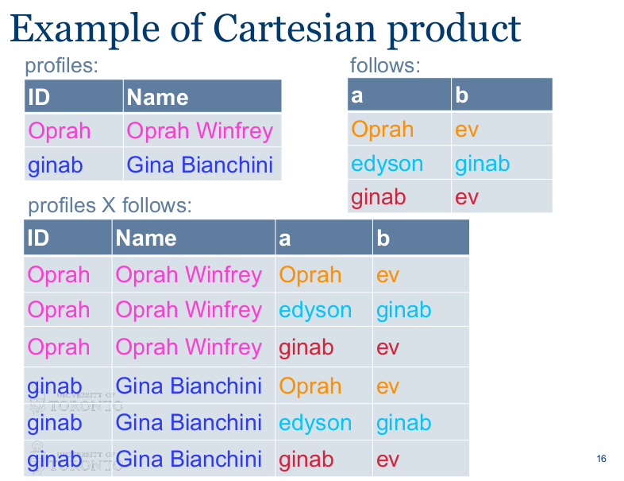
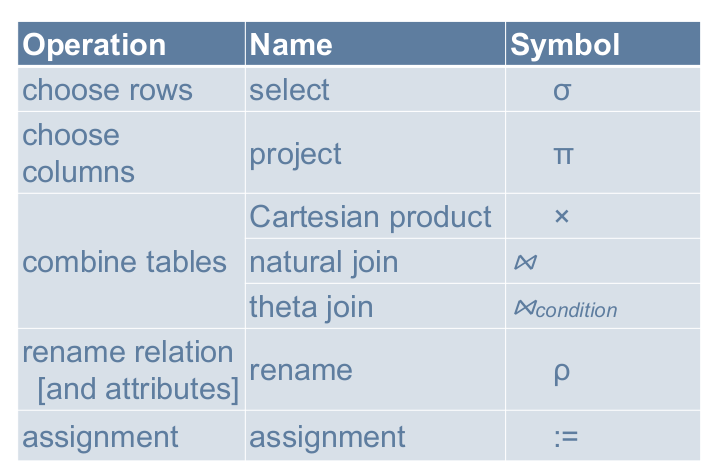

Relational Algebra
Definitions
Relation: table in SQL
Schema: structure of a relation(what columns does it have, what type are they, are there any constraints on its columns). e.g of schema: Teams(name, homefield, coach)
Instance: particular data in a relation. Instances frequently change, schemas always never.
Tuple: 1 row inside the relation. A row can have this format: {Nick, 21, UofT, CS}, where the attributes(see below) are {surname, age, university, degree}.
Attribute: column in SQL. Attribute of a relation. Every Every tuple must have a value for that in RA(relational algebra). This is not necessarily true for SQL.
Database schema: a set of relation schemas
Database instance: a set of relation instances
All Relations are sets. A relation is a set** of tuples, which means:
-
There can be no duplicate tuples
-
Since it's a set, the order of the tuples doesn't matter.
SQL is different since there, relations are bags(they allow duplicates. this will come later.)
Constraining the data
Superkeys
-
Superkey is a set of attributes(1+) that uniquely identify a tuple in a relation/table
-
key is a minimal superkey.
Foreign keys
- An attribute is a foreign key because it refers to an attribute that is a key in another table.
- If a key in another table has multiple attributes, then foreign key must also have attributes(since it must contain all attributes of the primary key).
- R_1[X] \subseteq R_2[Y], e.g: Roles[mID] \subseteq Movies[mID]
- X and Y are a list of attributes, of same arity
- Y must be a key in R_2: notice that it is a key, not the superkey(we want the minimal set of attributes that uniquely identify a tuple)
Note: R_1[X] \subseteq R_2[Y] is a foreign key ifff Y is a key for relation R_2. Otherwise, it's a normal referential integrity constraint, or inclusion dependency. e.g Artists[mID] \subseteq Roles[mID] If here mID in Roles is not a key, then we can have multiple mID's in Roles in which case this is not a Foreign key constraint.
R \subseteq S is equivalent to $ R - S = \emptyset$ , which essentially means that there is nothing in R that does not exist in S since (R - S only keeps the things that exist in R that do not exist in S).
Relational Algebra Basics
Assume following schema for our examples:
Exercise Schema
Movies(mID, title, director, year, length)
Artists(aID, aName, nationality)
Roles(mID, aID, character)
underlined means that it's the key(not the superkey! technically all of the attributes in a row create a superkey here
Foreign key constraints:
-
Roles[mID] \subseteq Movies[mID]
-
Roles[aID] \subseteq Artists[aID]
Select operator \sigma_c(R): choose tuples
-
Ris a table -
cis a boolean expression:alive=true -
\sigma means Select and is used to select all tuples from relation R which satisfy boolean expression
c. -
Result is a relation with same schema as operand, with all attributes from R, but only with tuples which satisfy condition
Project operator \pi_L(R): choose columns
-
Ris a table -
Lis the subset of attributes of R that you want to see(i.e which columns of your relation do you want to see. ) -
Result is a relation, with all tuples from R, BUT only the attributes in L.
Cartesian Product R_1 \times R_2
-
R1 and R2 are both relations
-
Result is a relation, with every single combination of a tuple from R1 concatenated to a tuple from R2
-
How many tuples are there in R1 \times R2? That's $\text{number of rows in R1 } \times \text{ number of tuples/rows in R2}
Note: If an attribute occurs in both relations, it is prefixed by the relation name: e.g: Movies.mid, Roles.mid

Cartesian product can be inconvenient. This is because it will generate a lot of rows that do not make sense. We want only the rows where some attributes from relation A match with some attributes from relation B. We call this operation: Natural Join
Natural Join R \bowtie S
Result is defined by:
-
taking the Cartesian product
-
selecting to ensure equality on attributes that exist in both relations.
-
projecting to remove duplicate attributes
Artists \bowtie Roles only keeps the tuples/rows where the aID is the same in both Roles and Artists(see the schema above). That means each row will represent information about an artist and a role he played, essentially showing all artists along with the roles that they played
Properties
-
Commutative: R \bowtie S = S \bowtie R
-
Associative: R \bowtie (S \bowtie T) = (R \bowtie S) \bowtie T, which means that brackets are essentially irrelevant, can just do R \bowtie S \bowtie T
Special cases
- If no attributes in common: resulting relation is cartesian product of the 2 relations.

- If one attribute in common: the 2nd column is ommitted from the result(either one of them could be omitted).

- Different attribute in common: we need to rename the attribute first to have the same name, and then we're back to case 2.
- No tuples match: if no tuples match, the resulting relation is empty
Problems with Natural Join
- It can over-match if it chooses to join on some attributes that we don't want(let's say it also joins on A.cake = B.cake, when we actually don't want that), so we lose some control over it.
- It can under-match if we want to join over some attributes that do not have to carry the same name. In that case we first have to rename the attribute, which can be a PITA.
The solutions to these problems is a Theta Join
Theta Join R \bowtie_{condition} S
This is syntactic sugar for the following sequence:
-
Perform Cartesian product(you join every row from R to every row from S creating R x S tuples).
-
Select \sigma the rows which satisfy your condition, and in your condition you specify which attributes pairs you want to match.
Assignment operator R := Expression
Alternate notation is R(A_1, A_2,...,A_n):= Expression, where you would rename attributes of Expression to A_1,...,A_n and give the new relation the name R. Note: all of the tuples stay the same, just the attributes change + the relation changes.
- R must be a temporary variable, you will use it for a future query, it serves no permanent purpose.
e.g:
CSCOffering := \sigma_{dept = 'csc'}Offering TookCSC(sid,grade) := \pi_{sid, \; grade} (CSCOffering \bowtie Took) PassedCSC(sid) := \pi_{sid} (\sigma_{grade > 50}(TookCSC))
Rename Operator \rho_{R_1}(R_2)
Alternate notation is \rho_{R_1(A_1,...,A_n)} (R_2): lets you rename all the attributes + the relation
We use \rho when we want to rename within an expression, and R := Expression when we want to create a multi-step query.
Set Operations
-
Relations are sets, therefore we can use set operations on them: union, interesection, and difference.
-
ONLY IF operands are relations over same attributes(in number of them, name and order)

Summary of Operators

Advanced Relational Algebra
MAX(min is analogous):
-
Find all tuples that are not max. (using select and projects)
-
Subtract from all to find the maxes (using set operations)
k or more:
- Make all combos of k different tuples that satisfy the condition
exactly k
- "k or more" - "(k+1) or more"
every:
-
create all combinations that should have occurred.
-
Find combinations that did not occur(by subtracting those that did occur from all possible)
-
all - (failures) = every